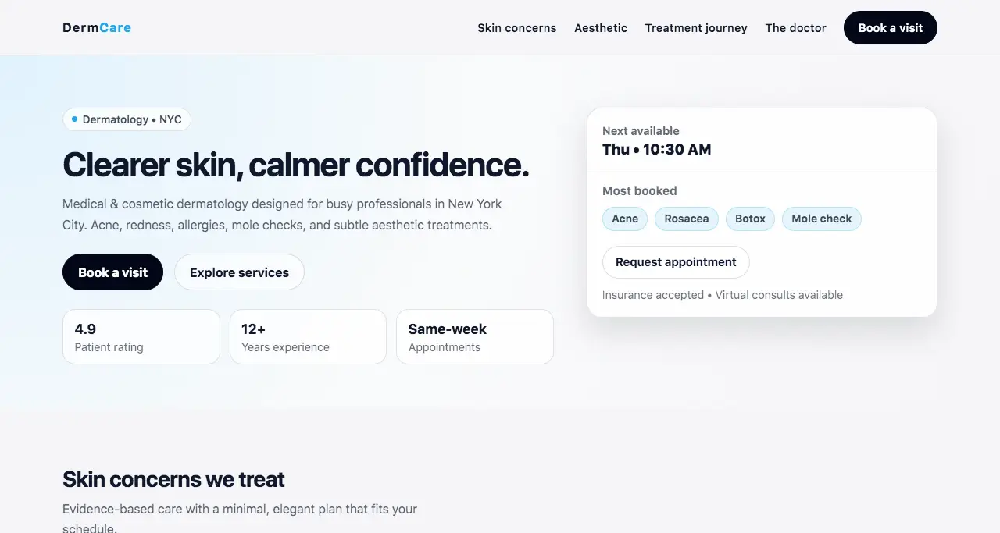
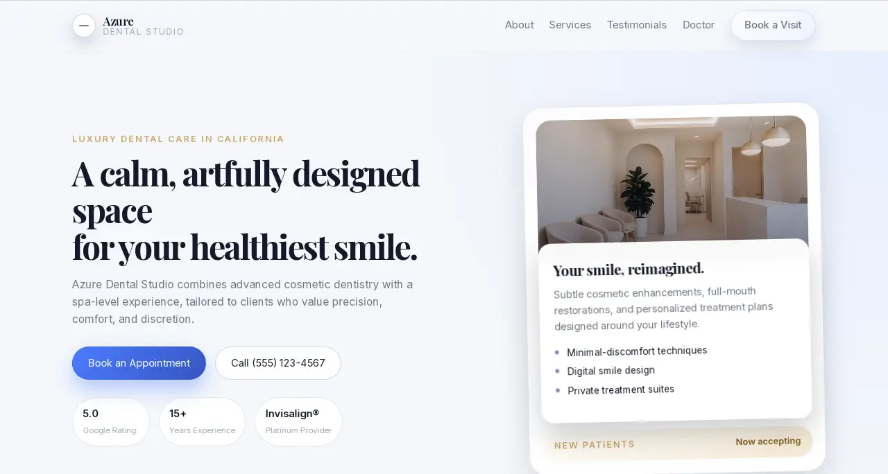
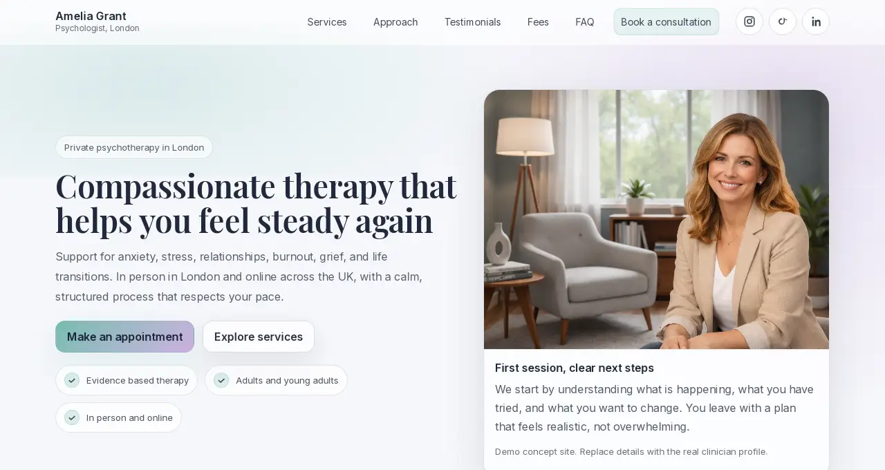
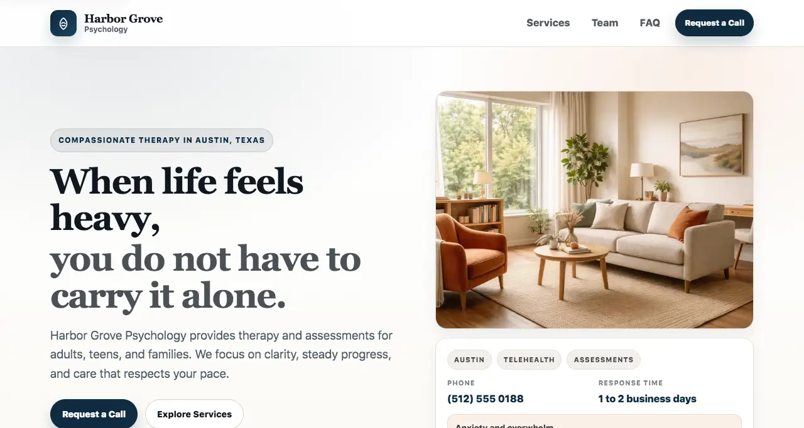

Case Studies.
A selection of digital assets designed to transform professional expertise into measurable trust and conversion.

Therapist Platform — Case Study
Every design and copy decision explained. Built to reduce doubt and drive first contact.

Architecture Portfolio — Case Study
Dark, premium aesthetic built to match the calibre of the work inside it.

Dermatologist Clinic — Case Study
Medical credibility without clinical coldness. Built for NYC professionals.

Dental Practice — Case Study
Designing for the appointment people keep postponing. Anxiety-first approach.

Therapist Platform (v2)
A calmer, softer rhythm with more breathing room.

Therapist Preview
A fresh take focusing on immediate connection.